en clair
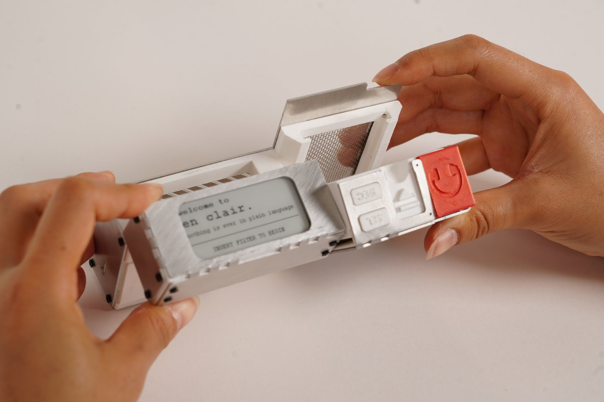
HCI design
Large language objects (LLOs)
Mechanism design
4.043: Design Studio: Interaction Intelligence (Project II)
8 weeks, Spring 2026
Elaine Liu, Krystal Montgomery (both MIT '26)
Fusion
Waterjet cutting
FDM 3D printing
Arduino IDE
Is what someone says ever what they really mean? en clair is a portable device for that gap. Handheld or worn at the hip, it captures speech directed at the listener, rewrites it through a large language model conditioned by a perceptual filter, and plays the result through noise-cancelling headphones. Filters live on swappable NFC cartridges: slot one in, describe how you want to hear the world, and everything retranslates. I built en clair with Elaine Liu and Krystal Montgomery; alongside our shared object design, I led the linkage and enclosure design, as well as fabrication.
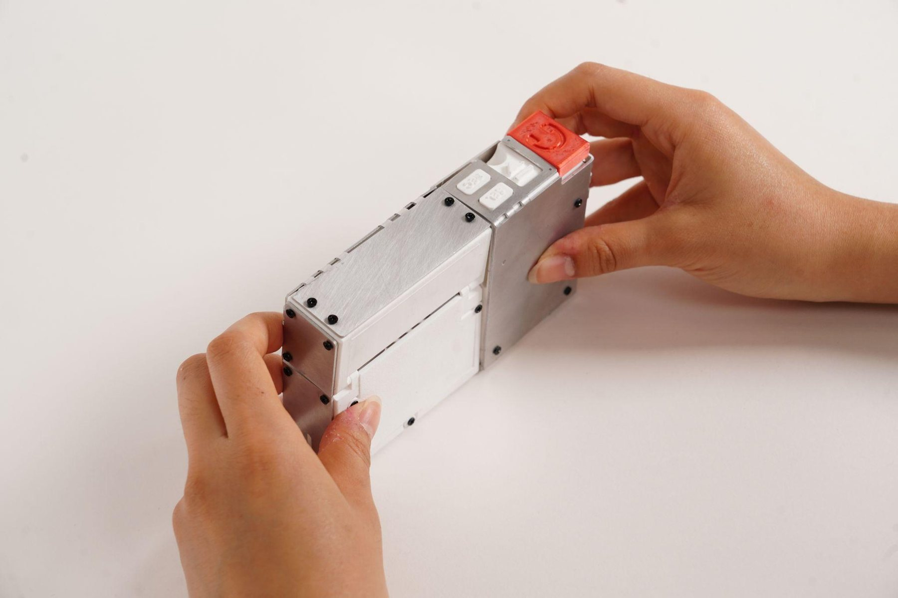
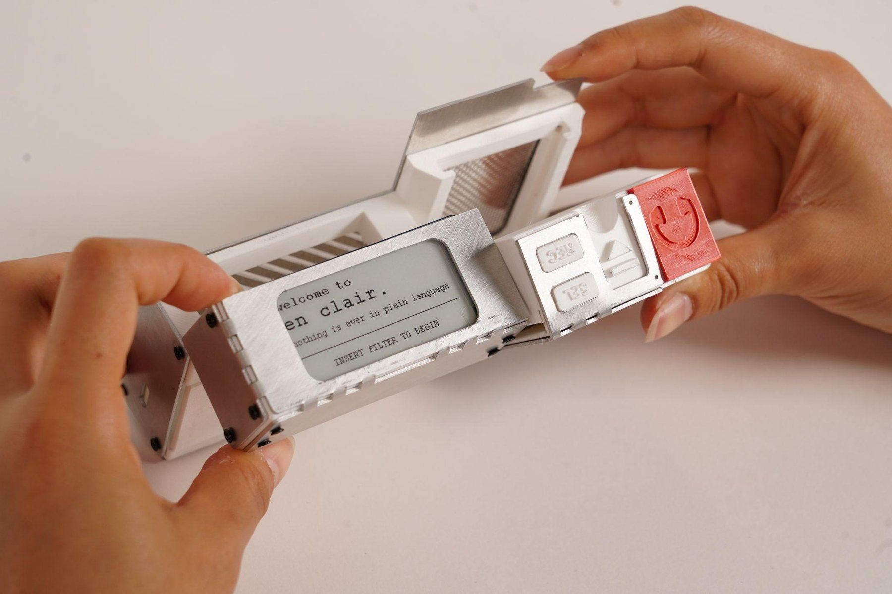
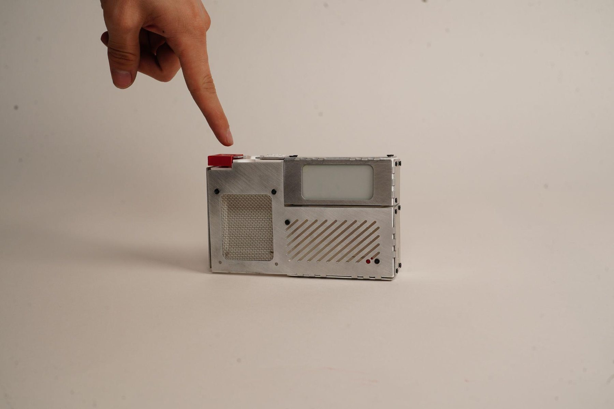
Context/Motivation
4.043: Interaction Intelligence is a studio on designing interaction, behavior, and intelligence across objects and spaces, from physical interfaces to neural networks and large language models. Our final brief was to make a physical AI object — what Prof. Marcelo Coelho calls a Large Language Object, where the intelligence is inseparable from the form.
Problem Framing
We were interested in the separation that exists between what someone means and what they actually say — one filter — and how the listener interprets it — another. Every conversation is already a multi-filtered experience. We set out to externalize that filtering rather than "fix" communication, and used that proposition to judge every later decision. Filtered speech would arrive as audio, in the same sensory channel as the original, and the act of physically inserting a filter was designed before any of the electronics that would make it work -- heavily inspired by the iconic Walkman.
Design Process
Form factor
en clair can be handheld or worn at the waist, drawing directly on the Sony Walkman's revolutionary reframing of music listening as a personalized and portable experience -- a symbolic mirror to the experience we were trying to craft. However, I was convinced that it could not simply pop open like typical cassette players, and our team went through a journey of form factor explorations reminiscient on older tech form factors -- from the simplest GameCube-esque box with cartridge slot to a Nokia-inspired sliding mechanism. Finally, I arrived at an modified scissor linkage that abstracted the opening mechanism: whenever the device is opened, the linkage simeoulaneously rotates the e-ink screen to face upward, allowing the device to stay hip mounted. Since on-screen prompts are only needed while choosing/replacing a filter, the display is most accessible exactly then.
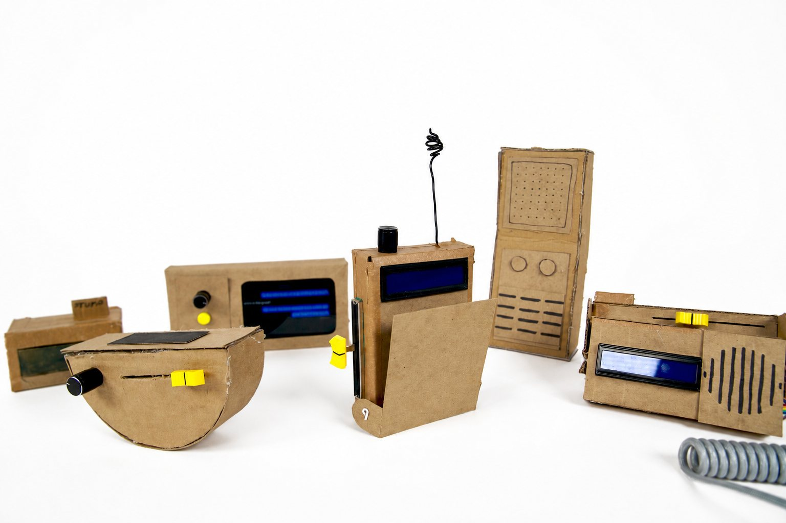
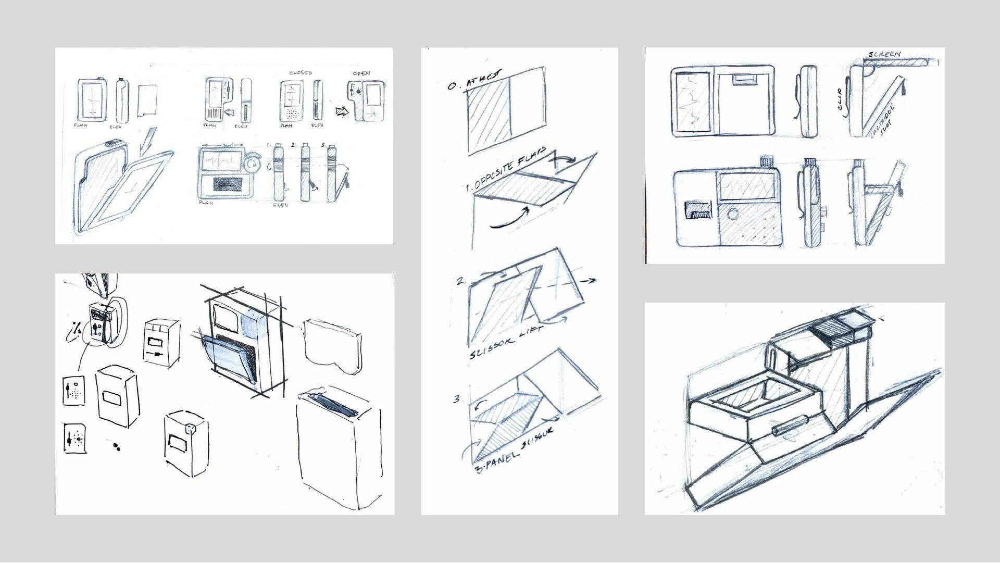
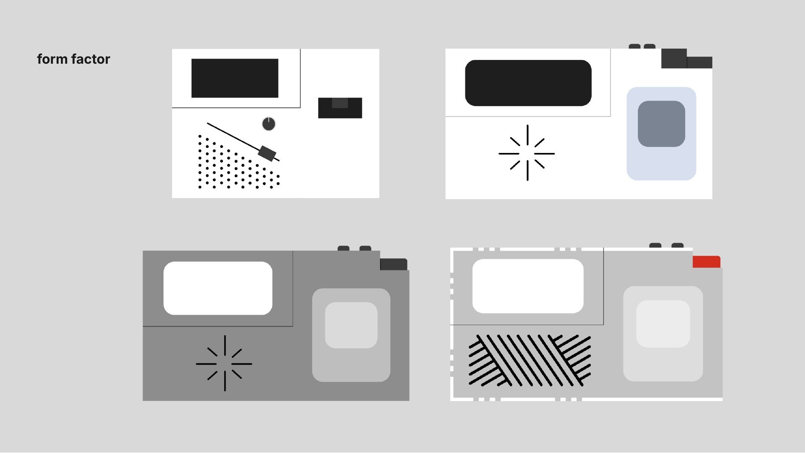
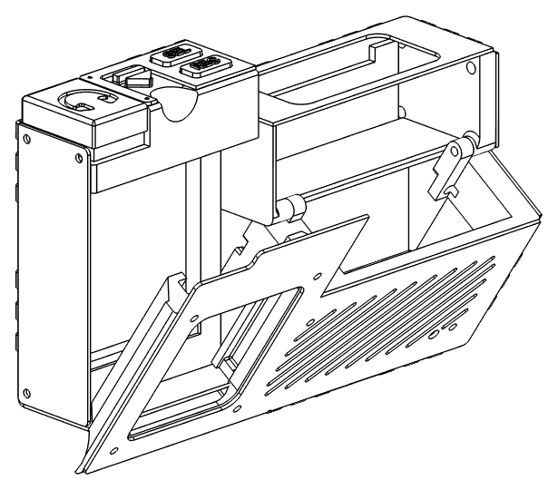
Cartridges and electronics
Each cartridge carries an NFC tag, read by a PN532 module — giving every cartridge a unique, swappable identity without complex electrical signatures. The device runs on an ESP32-S3 with an INMP441 I2S microphone and a 2.13 in e-ink display, chosen over a high-resolution or touch screen for its low power draw, legibility in any lighting, and visually quiet aesthetic. Everything mounts to a custom double-sided PCB milled in-house.
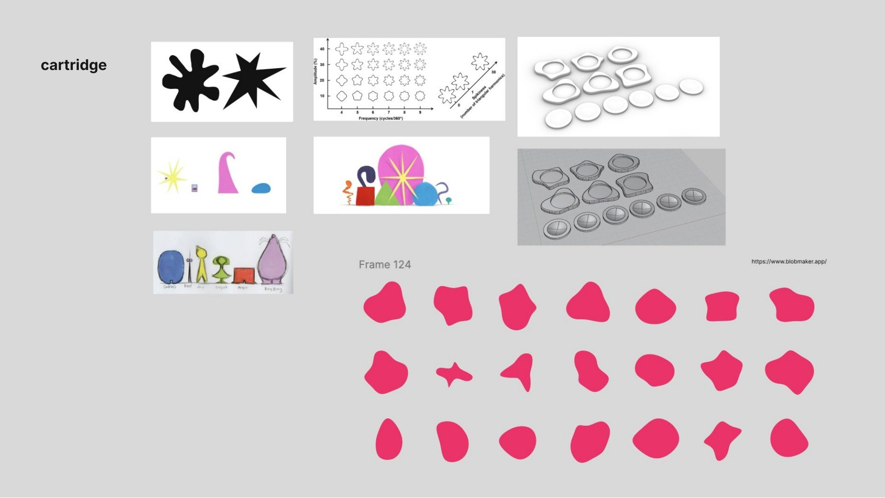
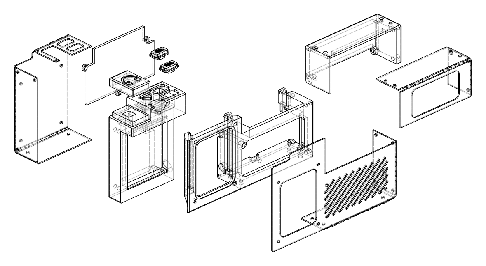
Software and prompt design
A laptop server transcribes speech with Whisper, filters it through Claude, and speaks the result back with ElevenLabs. New cartridges trigger a two-stage call: the user's spoken description is turned into a filter system prompt, which then drives all filtering on that cartridge — more reliable than asking users to write prompts themselves. To stop "POV drift" into narration as conversations grew, every turn is wrapped with an anchor that restates the listener's perspective.
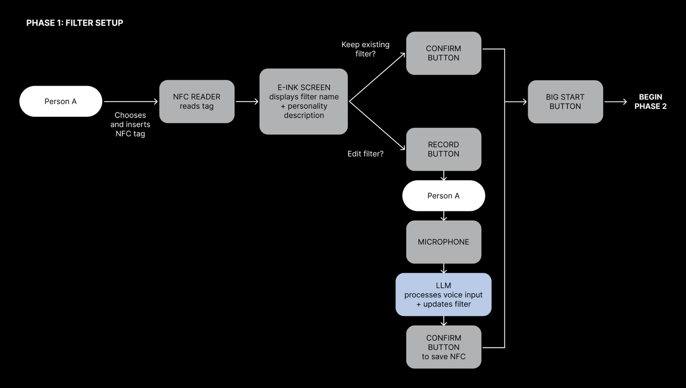
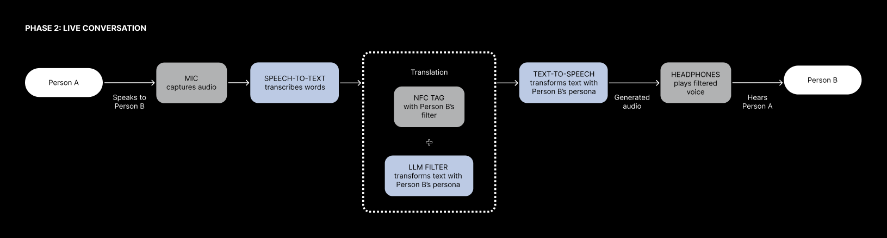
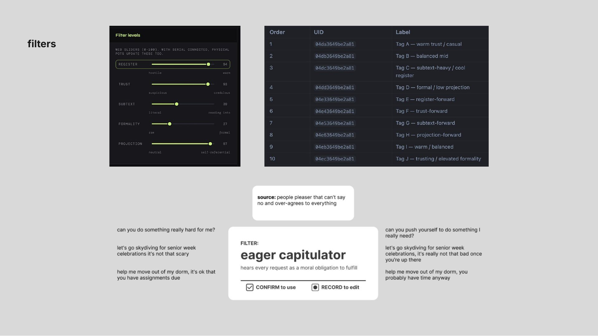
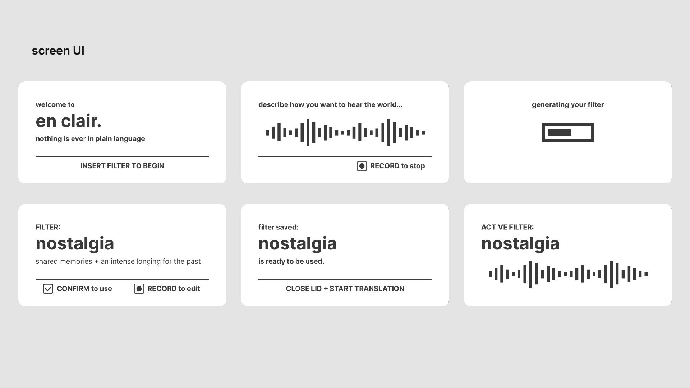
Room for Improvement
Every subsystem worked well on its own, but because we developed them independently for too long, we never fully integrated the device so we leaned into wizard-of-oz prototyping. Testing the pipeline also surfaced its limits: several seconds of latency meant the filtered voice often arrived after the conversation had moved on. It was a huge bummer to never see en clair fully realized, but it was such a fun project I may pick it back up any day that I get a breather.
Outcome
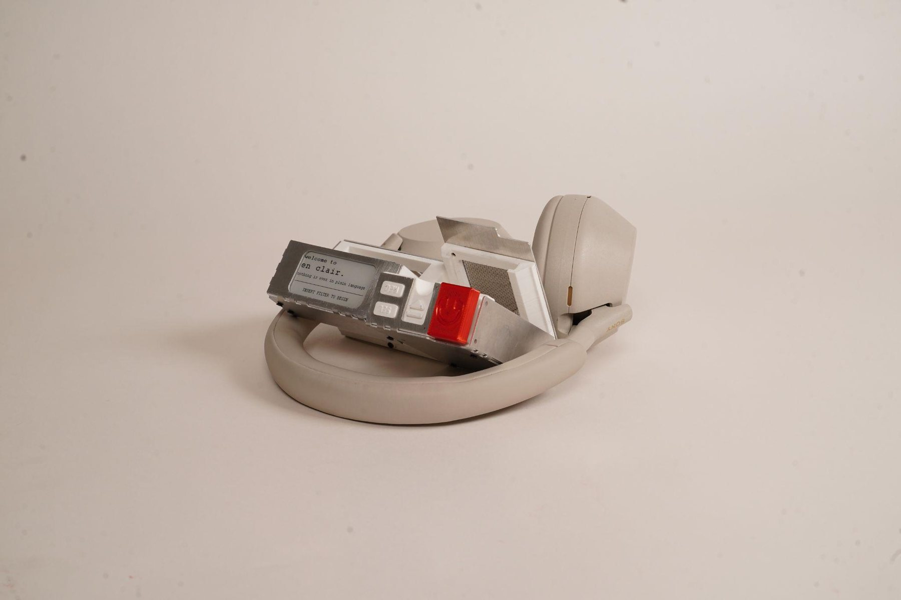
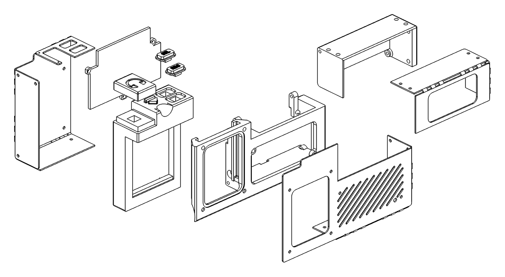
Reflection
en clair taught me the value of early integration testing the hard way. Every subsystem worked in isolation, but we developed them separately for too long and ran out of time to bring them together. Now I plan integration checkpoints from the start, even when the parts are still rough.